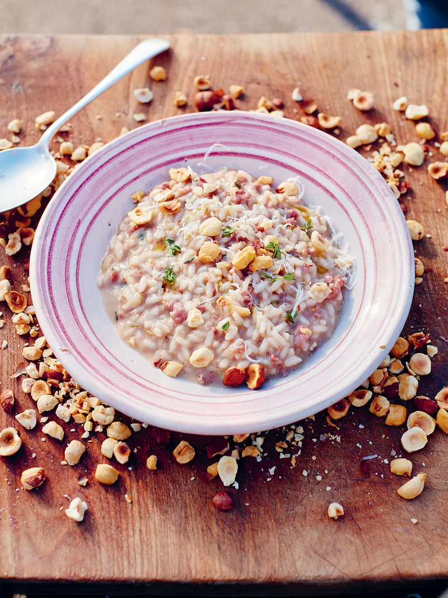

Sausage & Red Wine Risotto

Rice, rice, baby
Both comforting and luxurious, using a decent, drinking Barolo in this beautiful ruby risotto not only adds a lovely pink hue, but boldly brings the sweetness of the veg and the salty umami of the sausage together. With Parmesan, bombs of fontina and crunchy hazelnuts in the mix, it's an undeniably satisfying bowlful.
What you'll need
- fresh thyme - preferably fresh, but dried will work in a pinch;
- sausages - good quality sausages as this is the main protein of the dish;
- Arborio rice - can be substituted for similar risotto rice, or a paella rice. not Basmati or long grain, you need the starch from Arborio to achieve risottos signature creaminess;
- Barolo wine - recommended, not vital. Can be substituted with any other good quality red. Never cook with wine you aren't willing to drink;
- fontina - for melting bombs throughout your meal. If you can't find fontina, can be substituted with another semi-soft cheese like gruyere.
Ingredients
- 1.2 litres chicken or veg stock, simmering on low in a separate pot
- 40g whole hazelnuts, toasted and roughly chopped
- 1 red onion, finely chopped
- 1/2 bulb fennel, finely chopped
- 2 knobs unsalted butter
- 1/2 fresh thyme, (15g)
- 2 large, quality higher-welfare sausages, (125g each)
- 300g Arborio risotto rice, not washed - remember, we want that starch
- 250ml Barolo red wine, decanted to breathe - whilst you're there, pur yourself a glass too. You've earned it.
- 50g parmesan cheese, grated - if you have any spare rind, pop it in the stock pot for a burst of umami
- 50g fontina cheese, cut into dice sized cubes
- extra virgin olive oil, for drizzling
Instructions
- Simmer your chosen stock. Put a large, high-sided pan on a medium heat and toast the hazelnuts as it heats up.
- Meanwhile, peel the onion, trim the fennel and finely chop both.
- Tip the hazelnuts into a pestle and mortar, returning the pan to the heat. Add 1 tablespoon of olive oil and 1 knob of butter, followed by the chopped veg, then strip in the thyme leaves (reserving the soft tips for garnish).
- Squeeze the sausage meat out of the skins into the pan, breaking it up with the back of a wooden spoon. Cook for 10 minutes, stirring occasionally, then stir in the rice to toast.
- After 2 minutes, pour in the wine and stir until absorbed.
- Now start adding the stock, a ladleful at a time, letting each one cook away before adding more, and stirring constantly for 16 to 18 minutes, or until the rice is cooked but still retains its shape.
- When done, add a splash of stock or water to make it oozy, then finely grate over most of the Parmesan, beat it in with the remaining butter, taste, and season to perfection.
- Turn the heat off, then bomb in little nuggets of fontina, so they melt subtly into the rice.
- Cover, and leave to rest off the heat for 2 minutes while you crush the nuts.
- Divide the risotto between warm plates, then finely grate over the remaining Parmesan.
- Sprinkle over the crushed nuts and thyme tips, then drizzle with extra virgin olive oil.